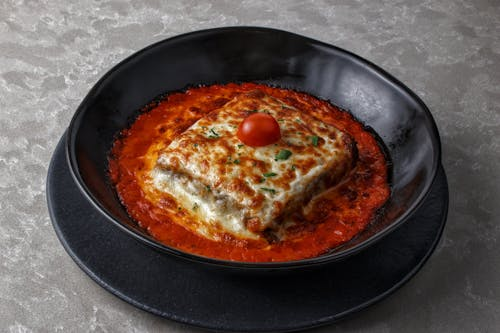

Lasagna Recipe-

This classic lasagna recipe is made with an easy meat sauce as the base.
Layer the sauce with noodles and cheese, then bake until bubbly!
This is great for feeding a big family and freezes well, too.Everyone loves
a good lasagna, right? It's a great way to feed a crowd and a perfect
dish to bring to a potluck. It freezes well. It reheats well.
Leftovers will keep you happy for days.
Ingredients-
- ground beef
- noodles
- ricotta cheese
- mozzarella cheese
- parmesan cheese
- tomato sauce
- bell peppers
- onions
Steps-
- Start by making the sauce with ground beef, bell peppers, onions,
and a combo of tomato sauce, tomato paste, and crushed tomatoes.
The three kinds of tomatoes gives the sauce great depth of flavor.
- Let this simmer while you boil the noodles and get the cheeses ready. We're using ricotta,
shredded mozzarella, and parmesan—like the mix of tomatoes,
this 3-cheese blend gives the lasagna great flavor!
- From there, it's just an assembly job. A cup of meat sauce, a layer
of noodles, more sauce, followed by a layer of cheese. Repeat until
you have three layers and have used up all the ingredients.
- Bake until bubbly and you're ready to eat!
Original Recipe From
Back to Main Page